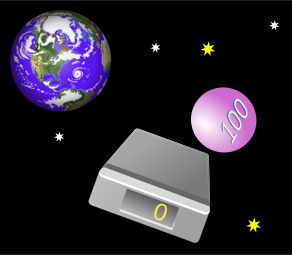
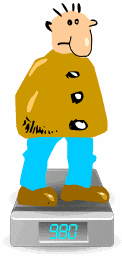

Weight or Mass?
Q: Aren't "weight" and "mass" the same?
A: Not really.
 |
An object has mass (say 100 kg). This makes it heavy enough to show a weight of "100 kg". |
But the scales are only showing a guess of the mass above them!
Gravity causes Weight
An object's weight is how hard gravity is pulling on it.
We think the weight is the same everywhere ... because we all live on the surface of the planet Earth!

But in orbit it would not push on the scales at all.
The scales would show 0 ...
... but the mass is still 100 kg !
An object's mass doesn't change (unless you remove some!), but its weight can change.

On the Moon the scales would wrongly show 16.6
for a mass of 100 kg
Because the pull of gravity on the Moon
is much less than on Earth
So Why Do People Say Weight instead of Mass?
People often use "weight" to mean "mass", and vice versa, because Gravity is almost the same everywhere on Earth and we don't notice a difference.
But remember .. they do not mean the same thing,
and they can have different measurements.
Weight is a Force
So ... if weight and mass are different, why are they both in kilograms?
Well, weight should not really be in kilograms!
I have used "kilogram" so far because that is what you see on a pair of scales, but it is technically wrong to talk about weight in kilograms ...
... weight is a force ...
... which is measured in Newtons
Newtons
The correct unit for force is the Newton (=1 kg·m/s2) which is abbreviated N.
| On the Earth's surface gravity makes a 1 kilogram mass exert about 9.8 Newtons of force |
So a 100 kg mass really weighs about 980 Newtons on Earth.

Why Do Scales Show Kilograms?
Scales show Kilograms because that is what people understand best ...
... but it is really just an estimate of the mass above them.
Scales should really show Newtons, but that might confuse people!
Question: how many Newtons should the scales show when you stand on them (hint: multiply kg by 9.8)?
- So the scales show an estimate of your mass based on the force your body exerts on it.
- And to find out how much force your body is exerting on the scales, multiply by 9.8 (to convert kg into Newtons).
Apparent Weight
But scales can be fooled ... because they measure a "downwards force" and don't know if it is gravity or some other force!
Just jump up and down (gently!) on your scales at home to see your apparent weight change, while your mass stays the same.
So your mass is the same, and your weight is the same (because the force of gravity hasn't changed), but your "apparent" weight changes. Read more at Apparent Weight
Conclusion
- Mass is a measure of how much matter something contains
- Weight is a measure of how strongly gravity pulls
- Apparent Weight is a measure of downwards force
- Force is measured in Newtons, not kilograms
- When scales show "kg" it is just an estimate of the mass above them